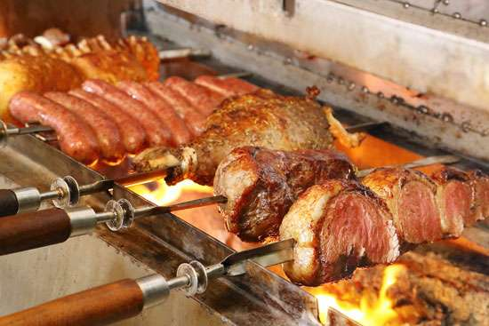

<link rel="stylesheet" href="../style.css">
<main>
    <h1>Carnes 🥩</h1>
    
    <h3>Senhoras e Senhores! Apresento-lhes o churrasco brasileiro</h3>
    <p>Em qualquer casa de brasileiro que você vá tenho a certeza que eles vão te convidar para um churras.</p>
    <p>O churrasco estará a sua espera para um bom sábado ou domingo haha.</p>
    <h4 class="ingredientes">Ingredientes</h4>
    <ul>
        <li>Carvão e fósforo</li>
        <li>Carnes como picanha, linguiça toscana, asinhas de frango, coraçãozinho...</li>
        <li>Sal grosso e paciência!</li>
    </ul>
    <h4>Modo de preparo</h4>
    <ol>
        <li>Tente fazer uma cabaninha com os paus de carvão, coloque um papel com óleo no meio e ateie fogo.</li>
        <li>Depois de formar uma brasa, como se fosse uma caminha, posicione as peças de carne na churrasqueira.</li>
        <li>Jogue o sal do alto para que cubra toda a carne e espere o tempo de cada carne chegar.</li>
    </ol>
</main>